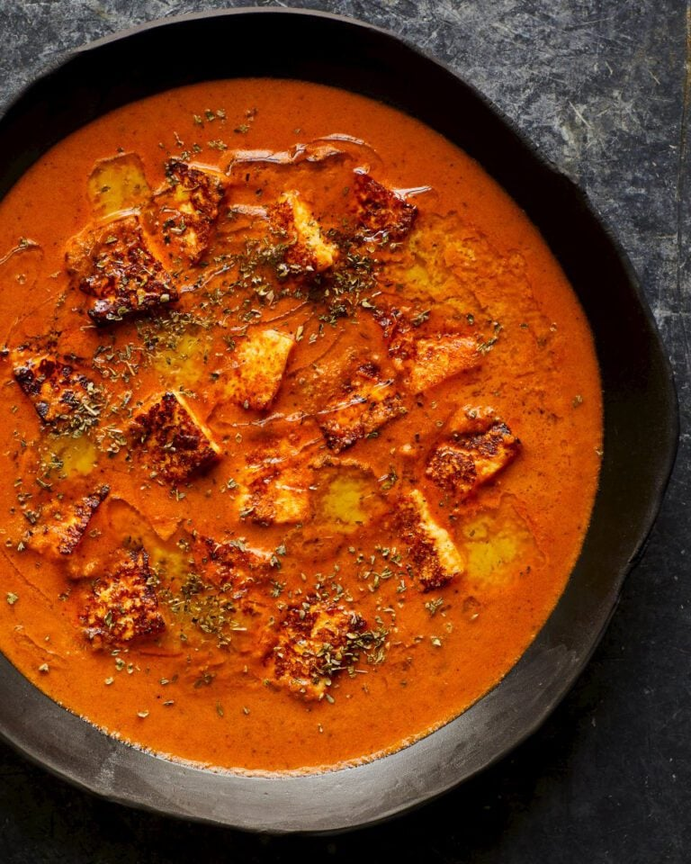

Paneer Makhani

Description
Paneer Makhani is a rich and creamy North Indian dish that showcases soft, succulent cubes of paneer (Indian cottage cheese) simmered in a luscious tomato-based gravy. This dish is known for its velvety texture and the perfect balance of spices, which include garam masala, cumin, and a hint of kasuri methi (dried fenugreek leaves). The sauce is often enriched with butter and cream, giving it a luxurious feel that complements the paneer beautifully.
Traditionally served with naan, roti, or steamed basmati rice, Paneer Makhani is a favorite at Indian restaurants and home kitchens alike. Its delightful blend of flavors and aromas makes it a must-try for anyone looking to experience the essence of Indian cuisine. Ideal for special occasions or a comforting family meal, this dish is sure to please both vegetarians and non-vegetarians alike!
Ingredients
- 200 grams paneer
- 250 grams tomatoes, 4-5 medium tomatoes
- 2-3 tablespoons light cream
- 2 tablespoons butter
- 1 tej patta
- 1 teaspoons ginger garlic paste, 1:1 garlic to ginger crushed to paste
- 1/2 teaspoon red chilli powder
- 1-2 green chillies
- 1/4 teaspoon garam masala
- 1/2-1 teaspoon sugar
- 1/2-1 inch ginger, julienned
- 1/2 teaspoon fenugreek leaves
- 1.5 cups water
- salt, as required
Directions
Making Tomato Puree
- First rinse and chop the tomatoes. Use the tomatoes that are ripe with a sweet tangy taste and not overly sour.
- In a blender or grinder make a smooth puree of the chopped tomatoes. No need to add any water while blending the tomatoes.
- Keep the tomato puree aside.
Making paneer makhani
- Melt butter in a pan. First add the tej patta (Indian bay leaf) and saute for a few seconds till aromatic.
- Then add the crushed ginger-garlic paste and saute for a few seconds or till the raw aroma of the ginger-garlic goes away.
- Add the tomato puree and stir well.
- Now add the red chili powder and saute this mixture till the fat begins to leave the side of the tomato paste. Takes about 14 to 15 on a low heat. Keep on stirring often.
- When you see the tomato mixture clumping together and the fat leaving the sides, then add water.
- Stir and simmer till the gravy or sauce thickens a bit. Takes about 7 to 8 minutes on a low flame.
- Then add the slit green chilies and ginger julienne. Stir and simmer for a minute.
- Add sugar, salt as required and crushed kasuri methi (dry fenugreek leaves).
- Stir and then add the paneer cubes.
- Mix gently and switch off the heat. No need to cook the paneer as then they can get hard or chewy and won't taste good.
- Lastly add cream and gently stir. Switch off the flame and then sprinkle with garam masala. Give a gentle stir again.
- Serve the paneer makhani with roti, naan, paratha or jeera rice or saffron rice or biryani rice or plain steamed basmati rice.
Return Home